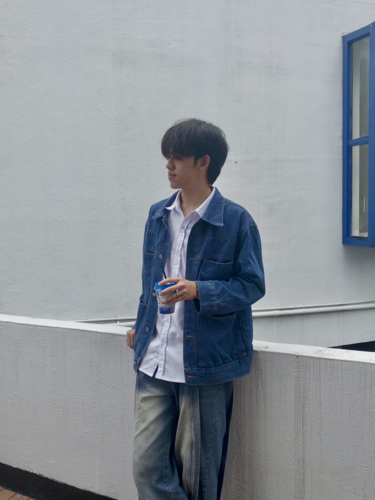

黃皓宸 Hao-Chen
銘傳廣電大三
2026 三立 AI 影視人才計畫
融合廣電技能與社群網感
善用 AI 工作流的影視創作者
老實說，在系上傳統的拍片劇組或藝術長片中，我並不是最出色的那個。但也因為這樣，我更早看清了自己的定位。在小學時，因為有當個實況主的夢想，我就開始自學剪輯、練習抓住影像的節奏。對我來說，懂傳統影視是我的底子，但如何在新媒體時代做出受歡迎的短影音，才是我真正的主場。
我非常喜歡追逐流量，平常習慣觀察 TikTok、Instagram、Threads 的演算法。比起單憑直覺剪片，我更習慣結合數據觀察來驗證成效，透過緊湊的剪輯節奏、迷因玩梗與字卡音效的靈活搭配，精準抓住年輕受眾的看片胃口。
當身邊許多同學在擔心 AI 會搶走工作時，我開始嘗試將 AI 當作解決實務痛點的利器。從跨工具產製原創貼圖，到以零資工背景架設出實用的自動化網站，只要有耐心地與它深度對話，AI 就是我最強大的專屬外包團隊。
期待帶著這套「社群網感」與「AI 溝通能力」加入三立電視，
成為那個能將創意無限放大的新世代內容人！
皓宸的創作生活花絮
